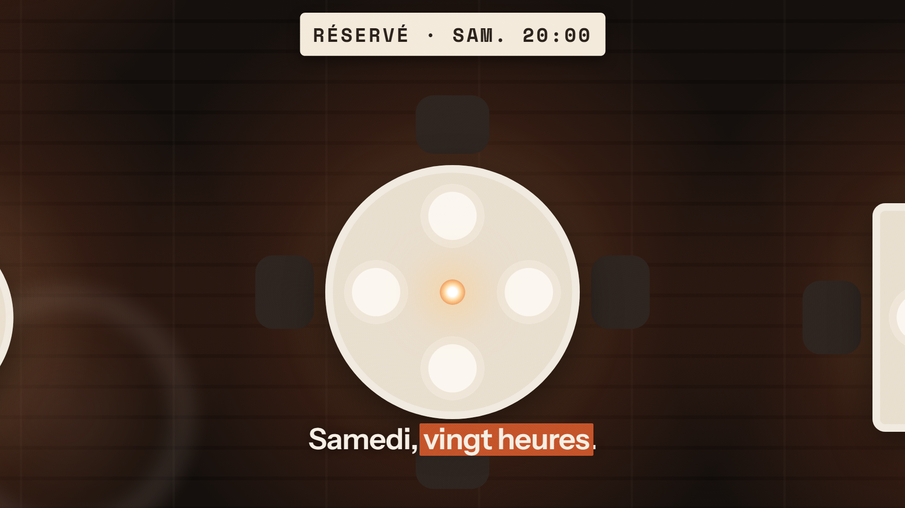

P10,00 → 1,90 sSamedi soir
« Samedi, vingt heures. »
La bougie de la table 12 s'allume, le chevalet « Réservé · sam. 20:00 » se redresse.
- Caméra
- Dérive avant sur T12, verre flou en avant-plan.
- Pont
- La bougie de T12 devient l'une des 14 bougies.
- Son
- pop sur la bougie